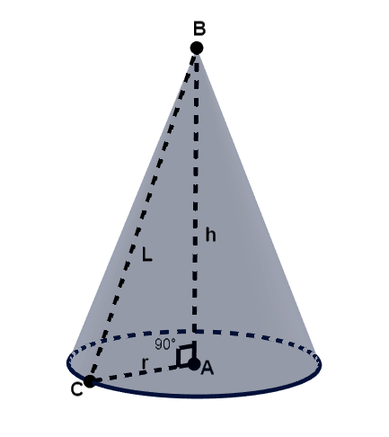
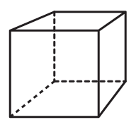

En física, geometría y análisis matemático, un objeto o ente es tridimensional si tiene tres dimensiones. Es decir, cada uno de sus puntos puede ser localizado especificando tres números dentro de un cierto rango. Ejemplo: anchura, altura y profundidad.
El espacio a nuestro alrededor es tridimensional a simple vista pero, en realidad, hay más dimensiones, por lo que también puede ser considerado un espacio tetra-dimensional si incluimos el tiempo como cuarta dimensión. La teoría de Kaluza-Klein original postulaba un espacio-tiempo de cinco dimensiones; la teoría de cuerdas retoma esa idea y postula según diferentes versiones que el espacio físico podría tener 9 o 10 dimensiones.
Hoy en día es posible la simulación mediante cálculos basados en la proyección de entornos tridimensionales sobre pantallas bidimensionales, como monitores o televisores. Estos cálculos requieren de una gran carga de proceso por lo que algunas computadoras y videoconsolas disponen de cierto grado de aceleración gráfica 3D gracias a dispositivos desarrollados para tal fin. Las computadoras disponen de las llamadas tarjetas gráficas con aceleración 3D.
En geometría son tridimensionales las siguientes figuras geométricas: poliedros de caras planas y superficies curvas.
| Número | Figura | Formulas | |
|---|---|---|---|
| Área | Volumen | ||
| Cilindro | A = 2πr(r + h) | V = πh(r^2) | |
| Cono |  | A = π(r^2) + πra | V = (π(r^2)h)/3 |
| Cubo |  | A = 6(a^3) | V = a^3 |